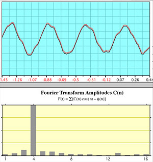
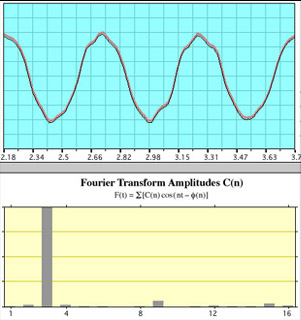
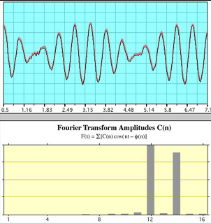

Fast Fourier Transforms
Fourier analysis of a periodic function refers to the extraction of the series of sines and cosines which when superimposed will reproduce the function. This analysis can be expressed as a Fourier series. The fast Fourier transform is a mathematical method for transforming a function of time into a function of frequency. Sometimes it is described as transforming from the time domain to the frequency domain. It is very useful for analysis of time-dependent phenomena.
One important application is for the analysis of sound. It is important to assess the frequency distribution of the power in a sound because the human ear exercises that capacity in the hearing process. The following illustrations describe the sound of a London police whistle both in the time domain and in the frequency domain (by means of the FFT).
|  | Whistle ALabeling the two pipes of the whistle A and B, the illustration at left shows the sound of Whistle A alone. The top graph is the ordinary display of signal voltage from the microphone vs time. The bottom graph is the fast Fourier transform (FFT) of that signal. It shows that most of the power is at one frequency, approximating a sine wave. The fact that the peak showing most of the power is at position four just reflects the fact that four periods were chosen for the FFT sample, |
|  | Whistle BThis is the same kind of display with whistle B alone. Three periods were chosen for the FFT this time, resulting in a main peak at position 3. |
|  | Whistles A and BWhen whistles A and B are sounded simultaneously the time plot shows the characteristic beat frequency pattern. The FFT shows the two distinct frequencies of the individual pipes. |
These illustrations show the essential nature of the FFT. For a sine wave with a single frequency, the FFT consists of a single peak. Combining two sound waves produces a complex pattern in the time domain, but the FFT clearly shows it as consisting almost entirely of two frequencies.
|